2015 steg floden Seine i Paris sex meter över sin naturliga nivå. Vid flodbankerna hördes främlingar tala med varandra om vad som händer med det man trodde var stabilt. Fotografiet är taget med svartvit film med en kamera från 60-talet. Det känns svindlande att tänka på vilken slags bilder slutaren släppt igenom under 80 år, och vad det säger om samhällsutvecklingen.
Radikala skiften i samhället och utmaningar att möta dem
Samhällstransformation på steroider
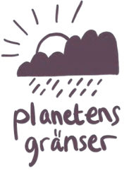
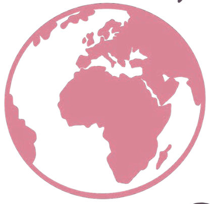
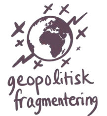
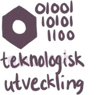
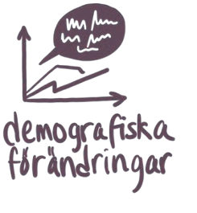
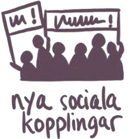
Vi lever i en tid av intensiva förändringar.
Klimatförändringarna är en enorm utmaning, där vi gång på gång slår i taket för planetens gränser. Vi ser också en global handel som utmanas alltmer, ett skakigt finansiellt system och samhällsinstitutioner som ibland kämpar med att uppfylla sina uppdrag, som skolan och vården. Under en väldigt kort tidsperiod våren 2025, har USA's president Donald Trump med hjälp en lojalitetsstyrd administration, omförhandlat landets roll i världen. Detta har lett till en global osäkerhet (i många fall en beskriven panik), där gränsen mellan allierad och motståndare blir allt svårare att urskilja. Världens geopolitiska karta ritas nu om i realtid.
De här förändringarna driver på en ännu snabbare samhällstransformation och har en påverkan både på oss som individer och på alla delar av systemet - på sätt som vi inte ens kan föreställa oss.
Samhällstransformation är inget nytt, men den vi står inför nu är mer omfattande och komplext än på länge.
Genom att försöka se helheten och förstå de olika systemen kan vi bättre navigera genom transformationen och forma vår egen framtid.Det handlar inte bara om att lösa gradvisa problem, utan om att förstå de djupa förändringar som sker på systemnivå.
Kriserna. Vi hör om dem i medierna hela tiden och i den allmänna debatten, både globalt och i det närmare
samhället runt omkring oss.
Digitalisering och sociala medier har förändrat hur vi kommunicerar, upplever och relaterar till omvärlden. Influencers agerar på andra sätt och utifrån en annan logik, jämfört med en tid när folk tittade på ”Hylands hörna” och läste en tryckt Dagens Nyheter. Det för med sig mycket gott, men även en polarisering, och påverkan på demokratiska val. Kriminella och andra antagonister utmanar oss genom att snabbt ta till sig ny teknologi, och det finns en oro kring att etik och säkerhet hamnar i bakvattnet av den snabba AI-utvecklingen.
Andra stora förändringar rör befolkningstillväxten. Under många år har befolkningen ökat i stort sett överallt i världen. Men de senaste åren har vi sett en minskning i nästan hela den industrialiserade världen. Befolkningen ökar fortfarande i vissa delar av Afrika, Mellanöstern och Asien, men i övrigt ser vi en minskning.
Vi står också inför ekonomisk turbulens med finanskriser, hög inflation och osäkra prognoser kring räntor och deras effekter.
Till detta kommer geopolitisk fragmentering – såsom kriget i Ukraina som bröt ut 2022, osäkerhet i Mellanöstern åren efter det och spänningar på flera andra håll. Dessa konflikter påverkar inte bara genom direkta krigshandlingar, utan även genom sekundära effekter som förändrade handelsmönster och globala samarbeten.
Planetens gränser överskrids. Vi har i decennier vetat att vi inte kan växa exponentiellt för evigt i en ändlig värld. Kopplingar till klimatet, sociala förändringar i världen och teknologins utveckling är centrala. Exempelvis har frågor som rör hur digitaliseringen påverkar tillväxten diskuterats sedan 1970-talet. Geopolitiska spänningar uppstår kopplat till tillgång till sådant som mineraltillgångar, eller kring vem som ska ta ansvar för en skenande uppvärmning.
Kriser skapar nya förutsättningar
På senare år har fokus skiftat från att enbart fokusera på enskilda kriser, till att koppla ihop dem. Begrepp som "polykris" och "metakris" används allt oftare för att beskriva hur olika kriser inte bara existerar var för sig, utan hänger ihop. Det är utmanande men viktigt att se om och hur frågor som jordens uppvärmning, Rysslands agerande, unga i utanförskap och mantrat kring ständig tillväxt hänger ihop. De olika kriserna kan ses som delar av ett större mönster, ofta på en global nivå.
Kanske ska vi inte enbart se dem som kriser, utan som skiften. Något som innebär en genomgripande förändring som påverkar hela systemet - som inte kommer att försvinna eller återgå till ”det gamla normala”. Snarare handlar det om fundamentala transformationer som formar vår framtid.
Polykris En situation där flera samtidiga kriser är systemiskt sammanflätade och förstärker varandra, vilket skapar en dynamik som är mer komplex och oförutsägbar än summan av de enskilda kriserna. Polykriser påverkar flera systemnivåer samtidigt och kräver ett helhetsperspektiv där lösningar måste adressera samband snarare än isolerade problem.
Metakris En genomgripande och strukturell kris där flera underliggande systemfel och brister samverkar och skapar en brytpunkt som ifrågasätter samhällets grundläggande logiker och funktionssätt. Metakriser driver ofta djupa, systemiska förändringar eftersom de inte kan lösas genom anpassning inom det befintliga systemet utan kräver helt nya paradigm samt sätt att förstå och organisera världen.
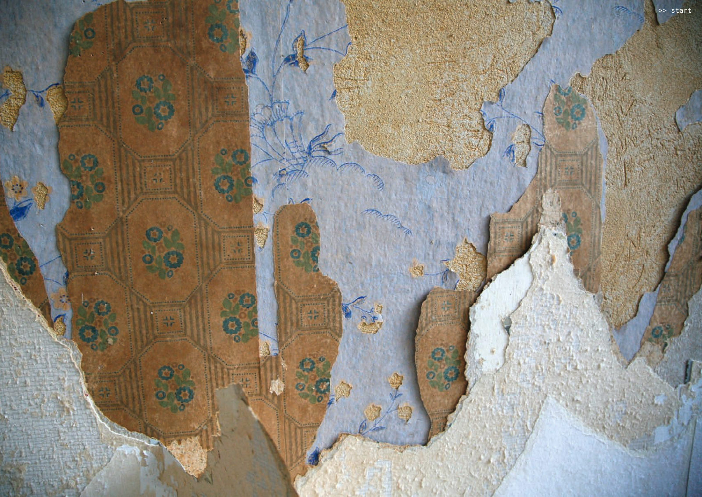
Tapetlager för tapetlager närmar vi oss husets byggnadsår, 1925. Vilka skiften upplevde de som bodde i huset under tiden de bodde där? Vad såg de hända, och vad insåg de först senare?
Vad kan vi lära av historien?
Skiften som radikalt förändrar spelplanen
Skiften handlar om förändringar i det överordnade systemet runt oss, det som vi inte kan påverka själva. De gör att själva förutsättningarna för vårt samhälle förändras.
De har stor påverkan på människors vardag, hur samhället fungerar, vilken typ av organisationer som överlever och uppstår, vad som är tekniskt möjligt och på vilket sätt delar av system interagerar med varandra.
Historiska samhällsskiften
Tidigare stora skiften som har transformerat samhällen och sociala strukturer är sprungna ur sådant som teknologisk utveckling (industriella revolutionen), sociala orättvisor (franska revolutionen), politiska / filosofiska idéer (kommunism), krig/säkerhetspolitiska behov (skapandet av FN och Nato/Warszawapakten;kalla kriget).
Ett exempel på ett stort samhällsskifte i Sverige är övergången från ett jordbruks- och hantverkssamhälle i början av 1800-talet - till den industriella revolutionen.
Denna omvandling som främst ägde rum under andra halvan av 1800-talet och in på 1900- talet, förändrade samhället fundamentalt.
Det demokratiska systemet, våra samhällsinstitutioner och de utbildningssystem som vi tar för givet idag, fanns inte före den industriella revolutionen. Innan det skiftet arbetade cirka 97 procent av befolkningen inom jordbruket, som idag utgör en bråkdel av sysselsättningen.
Det är lätt att tro att saker alltid har varit som de är nu, men när vi lyfter blicken ser vi att samhället har genomgått enorma förändringar. Urbaniseringen i slutet av 1800-talet var en avgörande del av detta skifte. Människor från landsbygden flyttade till städerna, där de blev arbetare, tjänstemän och fyllde andra nya roller. Det var en långsam men genomgripande förändring.
Skiften i branscher
En bransch kan också genomgå ett skifte – ta musikindustrin som exempel. För länge sedan var det enda sättet att lyssna på musik att delta i live-evenemang. Så småningom började man spela in musik, vilket ledde till framväxten av stenkakor, LP-skivor och senare CD-skivor. En hel industri byggdes kring produktion, distribution och konsumtion av inspelad musik.
Runt millennieskiftet utmanades dock den etablerade modellen av internet, med tjänster som Kazaa och Pirate Bay, vilket pressade industrin till ännu en stor omvandling. Nya aktörer som Spotify och strömningstjänster tog över, vilket ledde till en helt ny logik för hur musikindustrin fungerar och hur vi konsumerar musik. Idag ser industrin radikalt annorlunda ut jämfört med LP- och CD-skivornas tid.
Skiften på personlig nivå
Skiften kan också ske på en mer personlig nivå. Ett tydligt exempel är när man får sitt första barn – en förändring som markerar en klar före- och efterperiod i livet. En annan illustration är introduktionen av smartphones för de människor som innan levde i en tid utan såna. Eller bankindustrin, där mycket av det vi tidigare förknippade med banker såsom rådgivning och transaktioner, nu har flyttat ut till andra aktörer. Kvar hos bankerna är främst lönekonton, lån och liknande, medan nya aktörer utmanar idén om vad en bank är.
Skiften i organisationslogik
Idag blir Icke-hierarkiska strukturer allt vanligare, där traditionella maktordningar ersätts av nätverk och organisk logik. Vi har länge organiserat samhället genom att dela upp arbetet, låta människor bli experter på olika saker och sätta upp tydliga beslutsnivåer.
Vår utbildning, våra företag och myndigheter har varit uppdelade i discipliner och områden. När kommunikationen blir digital och bygger på globala plattformar, utmanas de gamla hierarkiska strukturerna nu av nätverks- och svärmlogik (när ett stort antal mindre komponenter tillsammans beter sig ändamålsenligt – som en svärm fåglar). Plattformsföretag som Meta, Google, Amazon och Uber har på ett djupare plan än vi ofta förstår, förändrat hur vi interagerar och organiserar oss, både kommersiellt och socialt.
På plattformarna ser vi framväxten av självorganiserande nätverk, där människor kopplar ihop sig utifrån gemensamma intressen snarare än strikt organisatoriska strukturer. Ledarskap, snarare än chefskap, blir centralt i dessa nätverk.
De hierarkiska linjeorganisationerna där vi ofta är anställda finns kvar, men parallellt agerar vi i nätverk, både inom och utanför våra organisationer.
Det är ofta genom dessa nätverk, eller kanske snarare svärmar eller kluster, som vi faktiskt utför vårt arbete, snarare än inom de formella strukturerna.
Man skulle kunna säga att en ny organisationstyp håller på att växa fram – den polymorfa organisationen: en som omformar sig i tillfälliga hierarkier vid behov och leds av den som har överblick över utmaningen. De mer övergripande ledarna är de som skapar förutsättningarna för att detta ska kunna ske.
Vi lever i samtid av rubbade balanser, ökad förändringstakt och oförutsägbarhet. Där verklighet sorteras, blandas och skapas i en global, digital transformation som inte går att kontrollera eller fullt ut förutse. Historiska utmaningar varvas med historiska möjligheter. Farligare, snabbare, ljusare? Ingen vet, och planeringsdoktrinens tid är till slut förbi.
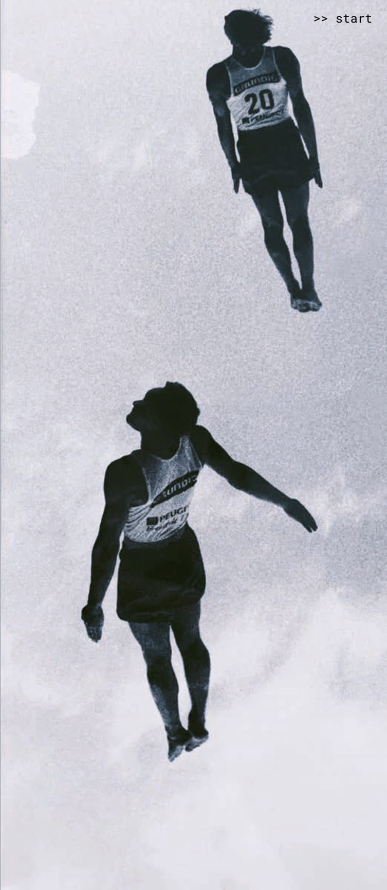
I vissa fall har vi tid att anpassa oss till de nya förutsättningarna. I vissa fall tror vi att vi har tid, trots att vi
lever på lånad tid.
Tänk till exempel på den globala uppvärmningen och de tipping points som samlad forskning menar att vi är på väg mot. I vissa fall går det så fort och förändringen är så genomgripande, att allt vi tidigare trott på ställs på ända. Det vi trodde vara sant var något helt annat.
Abrupt förändring har varit ett återkommande tema inom populärkulturen – tänk på Alice när hon ramlade ner genom kaninhålet till underlandet, eller på Dorothy som från till välbekanta Kansas plötsligt befinner sig i landet Oz med talande plåtrobotar och lejon. Även Neo i the Matrix får sin värld ställd på ända när han sväljer det röda pillret. De längtar hem eller önskar att de inte tagit det där förbaskade pillret, men har inget annat val än att hantera det nya läget.
Allt vi kan göra nu- är troligen just att göra. Det kan kännas läskigt men är i grunden en hoppfull tanke. För det har skett i historien förr, stora skiften av prövande, kostsamma lärdomar och nödvändiga justeringar efterhand.
Det är på ett sätt orättvist att vissa skiften med svåra konsekvenser upplevs som diffusa, och trots den oerhörda vikten att adressera dem så beter vi oss som passiva grodor som sakta kokas till döds. Det märks i sådant som planetens accelererande uppvärmning med konsekvenser inte bara för oss, men också kommande generationer. Men även i mer tydliga och akuta situationer – Covid-pandemin fick många länder att ställa om med en hast och magnitud som gav hopp om transformationsförmåga. Men den påverkade egentligen inte lika många människor i jämförelse, och i flera fall har lärdomar uteblivit.
Men vi kan konstatera en sak: Det är aldrig för sent att börja. Och som vi sa i bokens inledning – du behövs.
Från strutsreflexer till
handling
Ökande värderingsgap och när orden blir hinder för förändring
Ökande värderingsgap
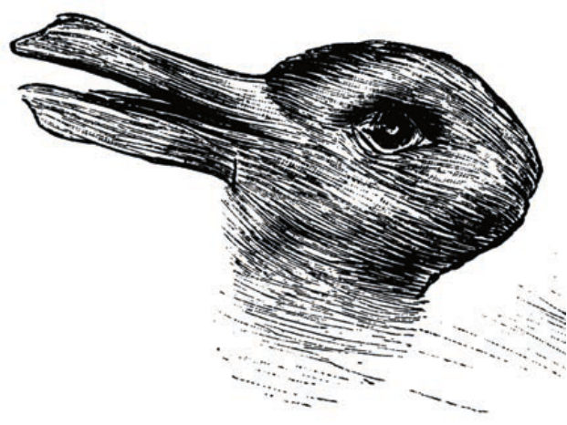
Vi lever i en värld med betydligt större och mer fragmenterade värderingar än på länge, på många plan.
Det sekulära väst går mot individers självförverkligande:
I studien World Values Survey som har genomförts över flera årtionden och i många delar av världen, ser vi hur olika samhällen skiljer sig åt på skalan från basala värderingar till mer självförverkligande, samt på skalan från traditionella till mer sekulära och rationella värderingar.
Sedan studien började på 1980-talet har vi sett att den sekulära västvärlden har gått kraftigt mot individers önskan om självförverkligande (”innervärldsstyrt”) medan de andra delarna i världen följt andra mönster. Detta innebär dels att det sekulära väst blivit mycket mer innervärldsstyrt men också att världens värderingar har fragmenterats markant.
Om våra samhällen i väst tidigare stagades upp av en bred medelklass med ”yttervärldsstyrda värderingar” - dvs mellannivåerna i Maslows behovshierarki (t ex grupptillhörighet och självkänsla) – så har stora grupper flyttat sig högre upp och strävar allt mer efter självförverkligande. Detta har lett till ökad fragmentering av perspektiv, till den grad att förtroendet för institutioner rasat och den gemensamma berättelse som binder oss samman, har kollapsat.
På det globala planet ser vi hur geopolitiska spänningar och konflikter också speglar denna fragmentering av värderingar, vilket inneburit att vår bild av att vi alla tillsammans strävar mot en ökad sekulär, liberal demokrati med mänskliga rättigheter - inte är lika självklar längre.
Idésprickor mellan USA och Europa
Statsvetaren Gina Gustavsson skriver i Dagens Nyheter (2025-03-18) om efterspelet till den infamösa presskonferensen där Trump och Vance förnedrade Ukrainas president Zelenzkyj i USA, och hur Frankrikes president i ett tal efteråt tog upp de värden som nu står på spel – respekt och humanism. Sprickan blir tydlig om man ser på yttrandefriheten. I USA prioriteras yttrandefrihet i absolut form, även på bekostnad av sanning och social sammanhållning. I Europa balanseras yttrandefriheten ofta mot andra principer som integritet, värdighet och heder.
Vad händer när själva fundamenten för samhällsdebatten – sådana som värdighet, respekt, sanning och yttrandefrihet – tolkas olika? När sådana värden kolliderar påverkar det vilken typ av förändring som anses legitim, eftersträvansvärd – eller ens möjlig. För systemisk transformation innebär detta att transformationens språk och idéer inte kan tas för givna – de tolkas genom helt olika kulturella filter.
”Det verkar intressant men väldigt politiskt korrekt - det är nog orden ni använder. Ansvar. Radikala skiften. Människor och känslor. Kraften”.
Det här var en 19-åring killes spontana reaktion när han läste handbokens innehållsförteckning.
Hans reaktion på dessa vanliga ord träffade något viktigt som påverkar hur vi som kollektiv hanterar och navigerar transformation. För även om hans reaktion var en personlig kommentar, så uppstår inte känslor, uppfattningar och erfarenheter i ett vakuum.
19-åringen reagerade på orden vi använder – "ansvar", "radikala skiften", "känslor", "kraften" – som politiskt korrekta, men kanske också som också inlärda och urvattnade.
Många unga vuxna idag har vuxit upp i en värld där de konstant ser kriser och där vuxenvärlden ofta pratar mycket, men verkar göra väldigt lite. Dessa unga kan ha en hög tröskel för att anamma det som är välformulerat, men som känns ideologiskt eller som vuxenvärldens försök att sälja in något. Känslan är ”visa mig vad ni faktiskt gör", snarare än "säg rätt saker”.
Att något som uppfattas som ”politiskt korrekt” är också ett uttryck för ett störrre skifte vi ser, där begrepp som under ett par decennier uppfattades som neutrala – som solidaritet, empati eller transformation – nu i vissa kretsar tolkas som uttryck för en viss ideologi.
Unga män rör sig i konservativ, anti-progressiv riktning
Just unga män är en växande grupp som verkar känna sig alltmer skeptiska till värden som för oss varit självklara - inte bara i vårt språkbruk utan i hela samhällsdebatten.
Flera studier och forskningsöversikter* visar på en värderingsmässig polarisering bland unga. Särskilt bland unga män i västvärlden ser vi en rörelse i mer konservativ eller traditionell riktning, ibland med inslag av öppen kritik mot det som tidigare betraktats som progressiva grundvärden.
Jämfört med unga kvinnor håller de unga männen i mindre utsträckning med om påståenden som rör jämställdhet, antirasism och LGBTQ+-rättigheter, och de är mer benägna att uppfatta frågor om jämlikhet, mångfald och klimat som politiskt vinklade och överdrivna.
Sociologen Jonathan Haidt, advokaten Greg Lukianoff och psykologen Jean Twenge har pekat på att unga män ofta reagerar negativt på vad de uppfattar som ett samhällsklimat där det finns en "rätt" åsikt eller ett "rätt" känslospråk – något som kan upplevas som moralisk dominans snarare än genuin dialog.
I vissa länder mobiliserar politiker väljare genom att rentav spela på antifeministiska värderingar, vilket lett till ytterligare polarisering. Ett exempel är Sydkorea där man lockat män genom att underblåsa känslor kopplade till ekonomisk osäkerhet och det man uppfattar som omvänd diskriminering. Analyser efter intervjuer med influencers från ”manosfären”(som den bland flera unga män omåttligt populära Joe Rogan), pekar på att USA:s president Trump hade framgång bland unga manliga väljare.
När orden blir hinder för förändring
Språk och värderingar kommer alltså att ifrågasättas än mer: Begrepp som “hållbarhet”, “ansvar”, “inkludering” eller “systemförändring” kommer inte längre ses som självklara eller neutrala. De kommer kräva tydligare förankring och konkretisering, annars riskerar de att uppfattas som ideologiska eller elitistiska markörer.
Tillitsgapet ökar och olika grupper kan känna sig marginaliserade: Om några upplever att samhällsdiskussionen förs över deras huvuden eller “inte är för dem”, kan detta leda till ett tyst utanförskap eller aktivt motstånd. Det blir svårare att skapa bred rörelse i en gemensam riktning, om en växande grupp känner sig marginaliserad av just sättet vi talar om förändring.
Framväxt av parallella rörelser. Det kan uppstå två parallella förändringskulturer. En som fortsätter att drivas av progressiva ideal, ofta akademiskt och konstnärligt orienterad. Och en annan som växer underifrån, ibland ur frustration, ibland ur en vilja till handlingskraft, där språket och symbolerna är annorlunda men behovet av förändring ändå finns. Frågan är om dessa kan mötas – eller om de utvecklas som motkrafter till varandra.
Det vi skriver om i den här boken är på sätt och vis "politiskt korrekt" – men inte i bemärkelsen slätstruket.
- Vågar vi tala om ansvar och rättigheter, om känslor och mänsklighet, saker som ibland förlöjligas i ett klimat där det är lättare att vara cynisk än hoppfull?
- Kan vi se att språket vi använder kan kännas distanserat eller som “någon annans projekt”? Särskilt för en generation som kanske är trött på visioner, som efterfrågar handling, ärlighet och ofiltrerad verklighet.
- Kan vi kommunicera på sätt som bjuder in utan att mästra? Som skapar nyfikenhet snarare än lojalitet, och som är öppna för olika erfarenheter – även de obekväma?
Det här ställer oss inför ett viktigt val: Antingen skyddar vi vår diskurs och riskerar att förstärka avståndet. Eller så lyssnar vi och tar samtalet på allvar. För i varje motreaktion finns också en signal: om tillhörighet, om att vilja bli förstådd, om att ha en given plats i framtidsbygget. Det är inte alltid enkelt, men om vi menar allvar med transformation behöver vi förstå att även de reaktioner som skaver kan visa vägen.
"Jag ser ett växande värderingsgap som försvårar samhällstransformationen. Unga ledare organiserar sig demokratiskt, kollektivt och utan ersättning – och bygger framtiden i det tysta. Samtidigt får de som ropar högst, ofta i motstånd mot förändring, mest utrymme. Det skapar en snedfördelning i vilka berättelser som formar framtiden.
Alla kommer inte vilja, kunna eller våga göra arbetet som transformation kräver. Det kan kännas tungt, men vi måste acceptera det. Därför måste vi ge stöd och bygga vidare där förändring faktiskt är möjlig – för att inte tappa kraft i motståndet.
Det handlar om att skapa fickor av framtiden i det nuvarande, och låta dem växa.”.
-Josephine Bladh, Konung Gustav V:s 90-årsfond
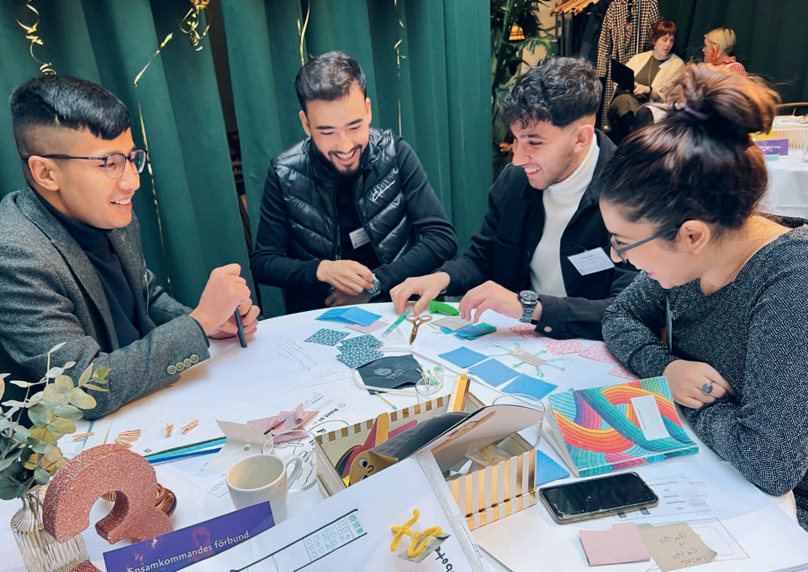
Civilsamhällets kraft: Engagerade ledare för ungdomsorganisationer som utforskar samtidens utmaningar för de ungdomar de riktar sig till – utmaningar som ofta är kopplade till värderingsgap av olika slag.
Teknologier som möjliggörare och som källa till dilemman
"Teknologin fungerar som en ständig katalysator för förändring, vilket tvingar oss att ställa oss frågan: Hur kan vi bäst använda dess potential för att möta våra största samhällsutmaningar?"
“De mest intressanta lösningarna är de som förenar teknologiska framsteg med mänsklig kreativitet och samhällsnytta."
Teknikens roll i samhället
Tekniken är mer integrerad i våra liv och samhälle än vi ofta tänker på. När teknik förändras ändras samtidigt strukturer och beteenden. Ibland är förändringarna så djupa att de ändrar förutsättningar för hela samhället.
AI i form av autonoma och självlärande entiteter, är exempel på en teknologi som konkurrerar med våra egna förmågor på ett sätt vi tidigare aldrig varit med om. Vi anar redan att detta är en teknologi som förändrar vår civilisation på djupet, men också hur vi människor påverkar naturens ordning.
Vi behöver förstå vilken roll tekniken spelar, och framförallt vad den medför för förändringar på de olika systemnivåerna. Utan detta får vi svårt att designa de tekniska tillämpningarna så att de är robusta och bidrar till mänsklighetens positiva utveckling.
Risken just nu är ett alltför instrumentellt tankesätt där vi bara ser den ytliga verktygsaspekten av teknologier som i själva verket har systemtransformerande effekter.
Transformation tar tid
När teknologier transformerar samhällen sker detta varken enkelt eller snabbt. Kanske har du sett bilder som illustrerar olika faser av industriell utveckling. Poängen med dessa är ofta att visa hur lång tid det tar innan en teknologisk förändring leder till en märkbar samhällseffekt. Spinning Jenny uppfanns redan på 1700-talet, men det var först med elektriciteten, Henry Fords introduktion av löpande bandet och scientific management under 1900-talet, som industrialiseringen tog fart på riktigt och omformade hela samhället.
På samma sätt såg vi de första mikroprocessorerna och den tidiga digitaliseringen redan på 1960-, 70- och 80-talen, men dessa förändrade inte världen på ett strukturellt sätt. Det var inte förrän en bit in på 2000-talet, med framväxten av sociala medier, plattformsföretag, smartphones och AI, som digitaliseringen började förändra samhället på riktigt. Idag har den tekniskt drivna accelererande transformationsvågen fått upp farten och omvandlar område efter område.
Nya behov växer fram
Transformationen vi befinner oss i idag är till stor del en effekt av de nya tankemodeller och förutsättningar som växt fram i kölvattnet av den nya digitala tekniken. Detta utmanar på ett djupt plan befintliga arbetssätt och system och ställer nya krav på både ledarskap som skall navigera igenom förändringen. Det skapar också behov av nya strukturer för att stödja övergången och nya sätt att arbeta.
Transformationen kan alltså inte enbart mötas med tekniska anpassningar, utan innebär fundamentala förändringar av strukturer, strategier och arbetssätt.
Vi behöver förstå att de tekniska lösningarna inte kan hanteras separat. De behöver växa fram tillsammans med mänskliga och organisatoriska mål och värden för att fungera och leda till samhället vi vill ha; ett samhälle som är uppbyggt runt dynamiska och resilienta system. Ett samhälle som har förmågan att hantera och återhämta sig från omedelbara kriser och samtidigt främja långsiktig innovation och förändring.
Digitala lösningar för nutid och framtid
Enligt Carl Heath, forskare på RISE, så är i dagsläget (2025) de mest hoppingivande tekniska lösningarna bland annat digitala plattformar för medborgardialog, automatisering av rutinuppgifter och teknologier som förstärker mänskliga förmågor. Dessa teknologier kan förbättra transparens, effektivitet och medborgarengagemang, vilket kan stärka individers rådighet.
Innovativa tekniska lösningar inkluderar:
- AI och maskininlärning: För beslutsstöd och automatisering.
- Öppna plattformar och datadelning: Möjliggör samarbete och innovation över sektorer.
- Hållbar teknik: För cirkulära lösningar och förnybar energi.
- Internet of Things (IoT) och blockchain: Erbjuder möjligheter för ökad spårbarhet, säkerhet och transparens i datautbyte, vilket förbättrar övervakning och kontroll av processer.
- Augmented reality (AR) och virtual reality (VR): Har potentialen att revolutionera hur vi interagerar med digitala miljöer, vilket kan förbättra både medborgardialogen och utbildningsinsatser genom mer immersiva och engagerande upplevelser.
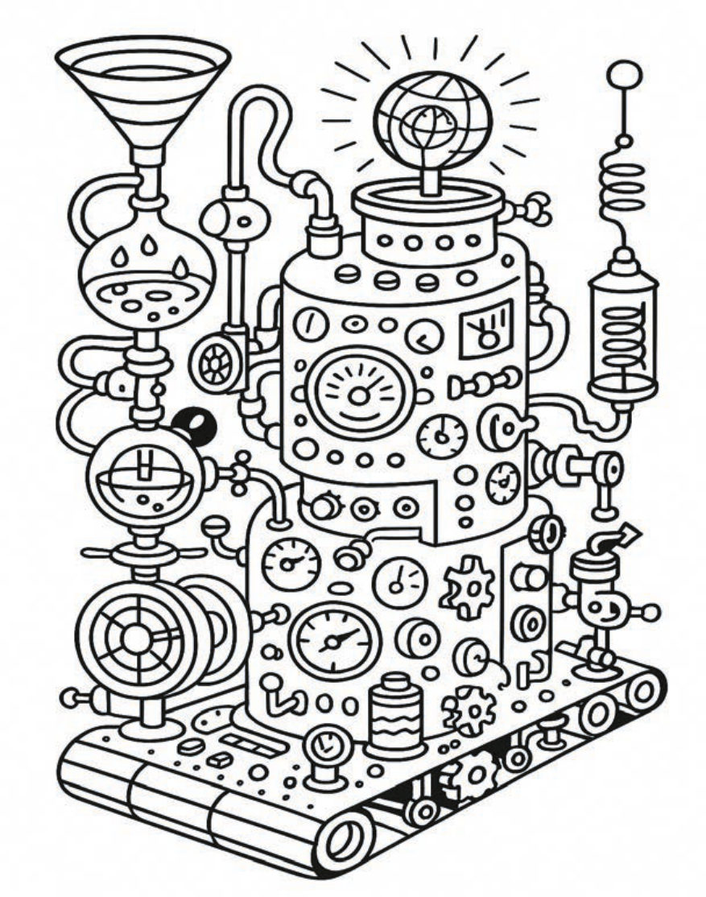
AI och dess implikationer
AI är en av de mest genomgripande teknologierna i vår tid, och dess utveckling påverkar alla nivåer av samhället – från hur vi arbetar till hur vi fattar beslut. Självlärande system förändrar gränserna mellan människa och maskin, och vi ser redan idag hur AI kan ta över uppgifter som tidigare varit reserverade för mänsklig kognition.
Samtidigt innebär AI både möjligheter och risker. Exempelvis har automatiserade beslutsstödsystem potential att effektivisera organisationer och minska mänskliga bias, men de kan också förstärka ojämlikheter och brist på transparens om de används fel. Ett tydligt exempel är hur AI kan påverka rekrytering, där algoritmer kan både minska och förstärka diskriminering beroende på hur de tränats.
För att hantera dessa utmaningar behöver vi en kritisk diskussion om hur AI utvecklas och används. Vi måste fråga oss: Vem tränar systemen? Vilka data används? Och hur säkerställer vi att AI inte blir en förstärkare av befintliga maktstrukturer?
I en värld där AI blir allt mer integrerad i beslutsfattande processer, krävs en större medvetenhet om dess systemiska effekter. Att förstå AI handlar inte bara om teknik – det handlar om etik, samhälle och människans roll i en digital era.
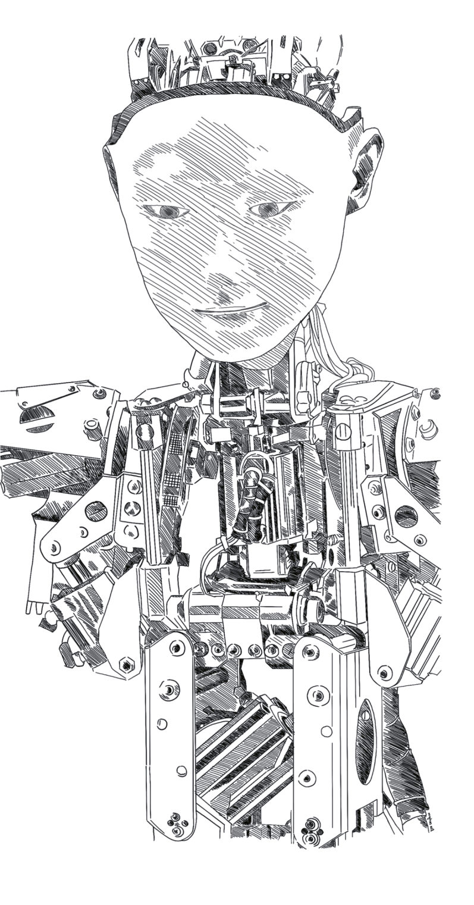
AI – hur kan vi förhålla oss till en alien intelligence?
När vi tittar på AI är det svårt att fullt ut förstå vad tekniken innebär och hur vi ska förhålla oss till den. AI-system lär sig analysera och agera med övermänsklig hastighet och kapacitet. De är självlärande och fungerar på sätt som vi människor inte riktigt kan greppa. Vi har redan gett AI-system tillgång till stora mängder data – allt från språk till mänsklig kunskap – vilket har möjliggjort deras enorma framsteg.
AI kan beskrivas som något som animerar döda ting och ger dem en form av organisations-, handlings- och beslutsförmåga. Även om detta inte är biologiskt liv, påminner det om liv på vissa sätt. Den här utvecklingen är en av de mest omvälvande förändringarna vi står inför.
Herbert Simon, Nobelpristagare och forskare vid MIT, påpekade redan på 1960-talet att vi lever i en alltmer artificiell värld. Även om vi påverkas av naturens lagar, är det mesta av det vi interagerar med i vardagen konstruerat – från städer till sociala system. För att förstå och hantera detta har vi utvecklat designvetenskap och ingenjörsvetenskap, som kompletterar naturvetenskapen.
Men när vi nu går mot en värld där självlärande och autonoma system agerar i svärmar, ställs vi inför nya utmaningar. När en självkörande Tesla stöter på ett hinder, lär sig alla Tesla-bilar något av den erfarenheten. Detta skiljer sig fundamentalt från hur vi människor lär oss, eftersom AI-system lär sig kollektivt och i realtid, på sätt som vi inte har några motsvarigheter till, och som kan verka utomjordiska.
En personlig reflektion och dilemma: Att interagera med självlärande system som en ”buddy” eller ”personlig assistent” hjälper oss att bli mer effektiva, produktiva och kanske till och med mer kreativa. Såklart man inte vill hamna på efterkälken. Men det gör något med ens identitet, och vi känner det redan. Var går gränsen för vad som är jag och inte, hur jag bidrar? Det som verkar vara en enorm möjlighet har också potential att skapa en avgrund av självtvivel och identitetskris.
Vi ser också hur det påverkar dynamiken i samarbeten, när individer tar till sig tekniken på olika sätt och den här förvirringen kring vem man egentligen jobbar med uppstår. Det gör mig lite orolig eftersom relationer och tillit är så centrala för att få till transformation på flera systemnivåer – men kanske är det bara ett barndomsproblem i utvecklingen? Oavsett vilket så är den typen av svaga signaler något som man behöver ta på allvar”.
— Lisa Carlgren, RISE
Använder vi orden teknik, teknologi eller rent av techno? Att teknologier är systemrelevanta har vi lyft, men vi talar senare också om upplevelser och konstens roll. Exempelvis hur sci-fi författare bidrar till transformation genom framtidsvisioner och kritiska samhällsreflektioner– ofta kopplat till teknologi.
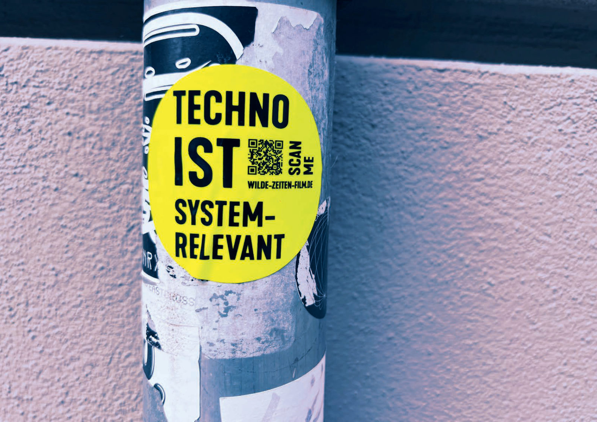
Inkludera kompetens om mänskliga, sociala och systemiska faktorer
Det finns en risk för överdrivna förväntningar på teknikens förmåga att lösa alla problem, och för att bli blind för fallgropar kopplade till människa och maskin.
Carl Heath ger ett exempel från kommunernas värld:
”Det är viktigt att komma ihåg att innovation och förändring i kommunal verksamhet inte enbart handlar om att introducera ny teknik eller implementera nya arbetsmetoder. Det handlar också om att skapa en organisationskultur som främjar kreativitet, samverkan och lärande. Motstånd mot förändring kan vara både rationellt och känslomässigt motiverat, och det kan finnas osäkerhet inför ny teknik, rädsla för att förlora kontroll eller oro för ökade krav på anställda. Därför är det viktigt att inte enbart förlita sig på tekniska lösningar utan också adressera kulturella och affektiva faktorer”.
Det är till och med så att alla organisationer är i grunden sociala system där teknik och mänskliga beteenden samspelar och integreras i ett komplext mönster – en kultur. När en ny teknik eller metod skall ”införas” handlar det alltid om att förändra ett sammankopplat komplext system, där mänskliga beteenden och föreställningar formats tillsammans med och sedermera växt ihop med en uppsättning tekniska verktyg.
”Motivation att skapa förändring och lära nytt föds i såväl nyfikenhet som i psykologisk trygghet. Människors behov av meningsskapande behöver designas in i systemet och inkludera alla som ingår i det”.
”Teknik är aldrig neutral och måste förstås och tillämpas i sitt sammanhang. För att undvika fallgropar krävs en kritisk analys av hur tekniska lösningar påverkar människor och samhällen. Teknik måste ses som en del av ett större ekosystem som inkluderar mänskliga, sociala och politiska faktorer”.
Mycket är hoppingivande
Trots osäkerheten och orosmoln finns det mycket hopp. Inom många områden börjar vi förstå att vi behöver arbeta på nya sätt. Agil utveckling, användarcentrering och tjänstedesign är exempel på metoder som hjälper oss att sätta användarens behov snarare än tekniken, i centrum. Testbäddar och experimenterande arbetssätt har blivit viktiga verktyg för att gradvis skala upp lösningar som faktiskt fungerar, istället för att tvinga fram linjära modeller.
Vi ser hur digitala plattformar används för att koordinera hjälpinsatser vid kriser, och hur människor tillsammans skapar lösningar som är snabbare och mer effektiva än traditionella system, som t.ex. den Öppna Skolplattformen i Stockholm. Det visar att förändring är möjlig, men den måste börja hos oss själva och i vår direkta omgivning. Det handlar om att balansera mellan att bevara det gamla och att bygga det nya, och om att själv ta på sig ansvar för att driva förändring och föregå med goda exempel.
Vi märker i vårt arbete med den här boken att det hjälper många att få ta del av modeller och historiska exempel för att förstå olika typer av skiften. Det kan handla om samhällsnivån, men också om mer personliga förändringar. När vi lever i ett system som dominerar vår vardag utgör detta ofta gränsen för vårt synfält. Det är svårt att föreställa sig något utanför det systemet, och allt som följer en annan logik kan kännas främmande.
"Att bygga nya strukturer och gemenskaper på det lilla planet är det som kommer att forma morgondagens samhälle."
- P A Martin Börjesson, RISE
Exempel från praktiken
Salt Tech – teknik för transformation och demokrati
William Asefaw, ung entreprenör Örebro
När teknik utvecklas i nära relation till verkliga behov och lokala sammanhang, kan den bli ett avgörande verktyg i omställningen mot en mer rättvis och hållbar värld. Innovation handlar då inte om nya produkter i sig, utan om nya möjligheter för människor att leva, arbeta och känna sig trygga – även där systemen brister.
Salt Tech är ett exempel på detta. Det är en belysningslösning som drivs med hjälp av saltvatten, framtagen av William Asefaw i Örebro. Lamporna är tänkta att fungera i nödsituationer och i delar av världen där elektricitet är instabilt, dyrt eller obefintligt. Målet är att erbjuda en prisvärd, robust och miljövänlig lösning som inte förutsätter tillgång till elnät.
Idén föddes under en resa till Kenya och Eritrea, där William såg hur gatubelysning släcks tidigt på kvällen och där strömavbrott ofta förlamar vardagen. Upplevelsen av mörker och utsatthet blev en drivkraft för innovation: kan man skapa ljus med hjälp av det som redan finns – som vatten och salt?
Tillsammans med sin bror började William utveckla prototyper som idag är under patentskydd. Tekniken bygger på elektrolyter och kemisk reaktion mellan salt och vatten.
På så vis skapas ljus som kan användas oberoende av extern elförsörjning – något som kan spela en avgörande roll i humanitära insatser, i utsatta områden eller i klimatrelaterade kriser.
Genom stöd från innovationsmiljöer och genom priser och stipendier från bland annat XO Foundation och familjen Spendrup, har William också fått tillgång till verktyg, handledare och tekniskt kunnande inom exempelvis CAD, 3D-design och produktutveckling. I detta möte mellan idé, teknik och lokal infrastruktur har något tagit form – inte bara en lösning, utan en framtidsriktad förmåga att tänka nytt där behoven är störst.
Salt Tech visar att omställning inte bara handlar om stora systemskiften, utan också om unga människors vilja att förändra världen – en lampa i taget.
Från havets botten till byggbranschens framtid
När teknik utvecklas i samklang med naturen och i syfte att lösa verkliga samhällsutmaningar, kan den bli en katalysator för hållbar transformation. Alga Insulation är ett exempel på detta – ett företag som omvandlar alger och tång, ofta betraktade som avfall, till miljövänligt isoleringsmaterial för byggbranschen.
Företaget är grundat av 20-åriga Janna Naser under hennes gymnasietid i Örebro. Sen dess har Alga Insulation vuxit från en idé inom Ung Företagsamhet till ett lovande företag med ambitionen att revolutionera hela byggindustrin. Genom att använda alger som råmaterial adresserar företaget både problemet med övergödning i haven och behovet av hållbara byggmaterial.
Janna har mottagit flera utmärkelser för sitt arbete, inklusive Anders Walls Ung Företagsamhets-stipendium och Frodas stipendium "Framtidens kvinnliga företagare”. Dessa erkännanden har möjliggjort vidare forskning och utveckling i samarbete med forskare på RISE, med målet att lansera produkten på marknaden inom två år.
Alga Insulation exemplifierar hur unga entreprenörer kan driva systemförändring genom att kombinera vetenskaplig kunskap med ett starkt engagemang för hållbarhet. Genom att förvandla ett miljöproblem till en resurs visar företaget vägen mot en mer cirkulär och hållbar framtid.
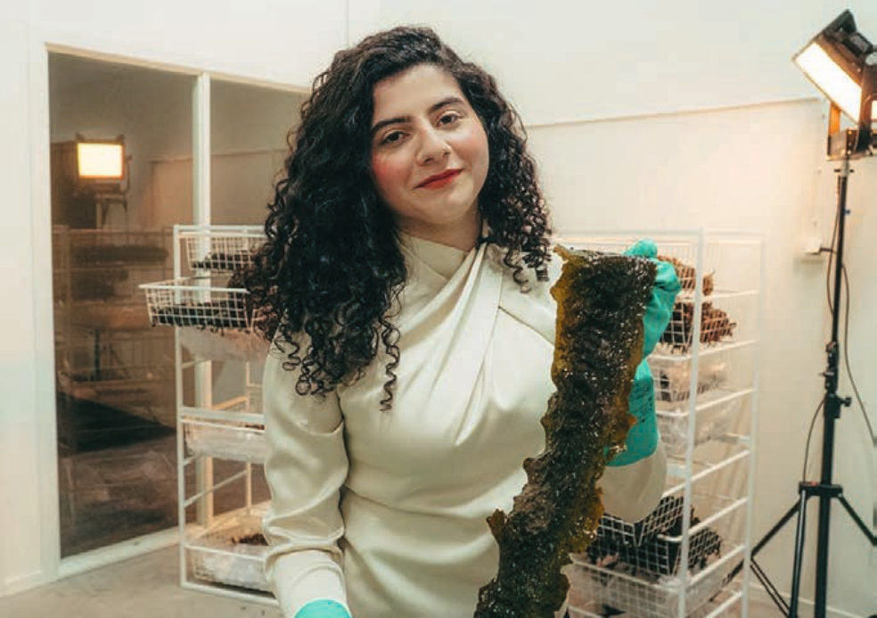
Janna Naser, ung entreprenör Götborg
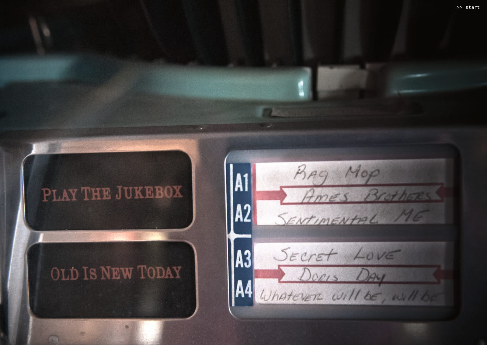